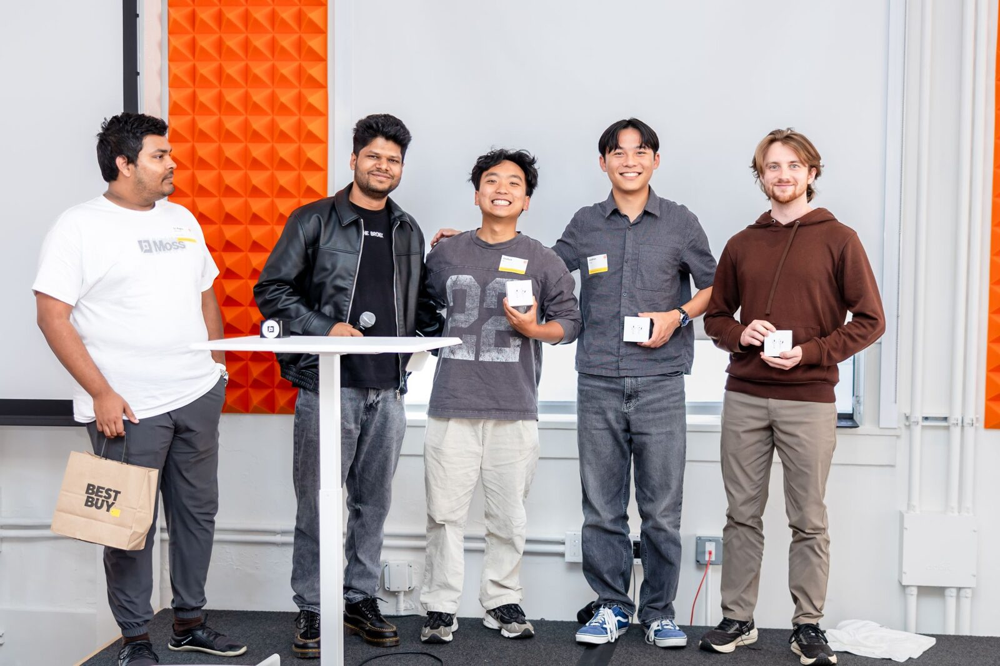
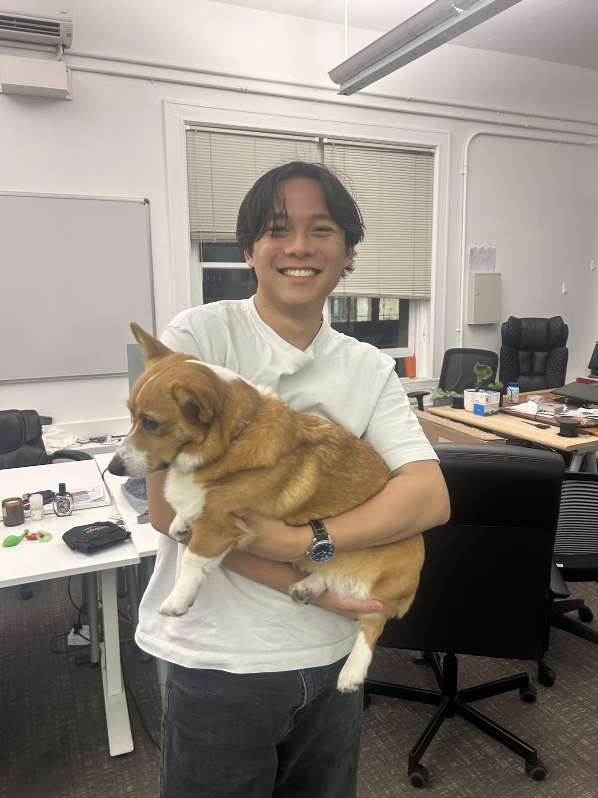

It opened with first place at the YC × Moss hackathon, won with ManuAI against more than 200 competitors. July and August went to AI engineering at Corgi: an internal MCP server, a React Native iOS app, and a support chatbot. The rest of it was weekends, walks, and the people who made the summer.

